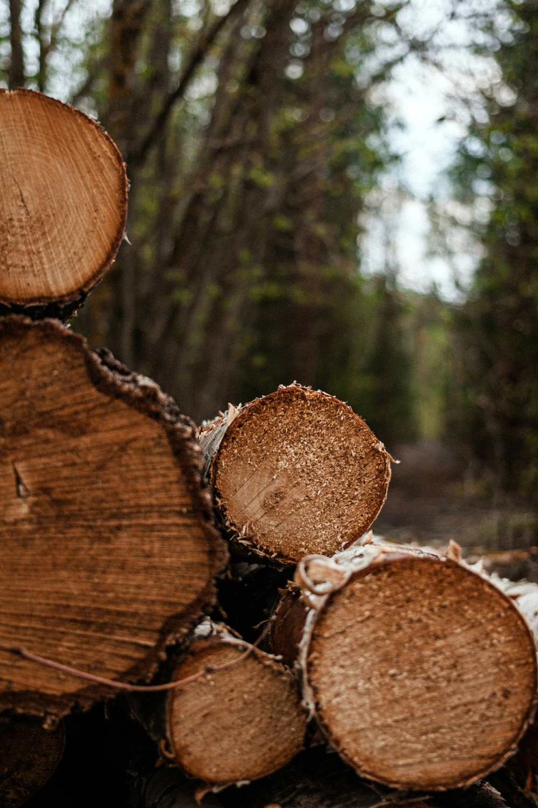
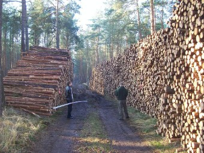
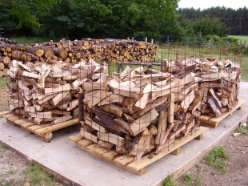
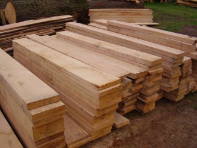
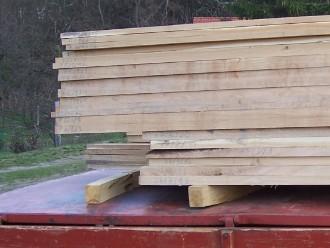
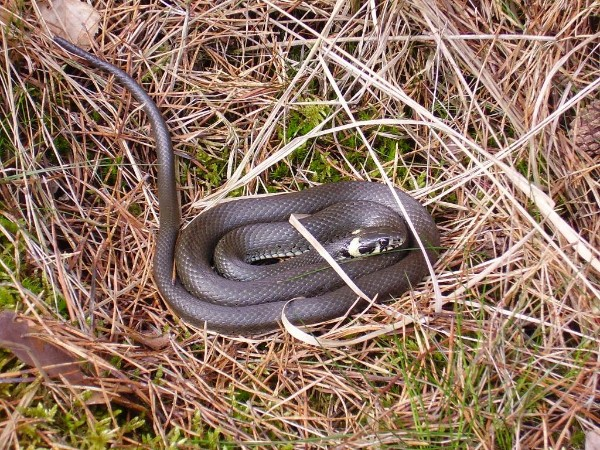
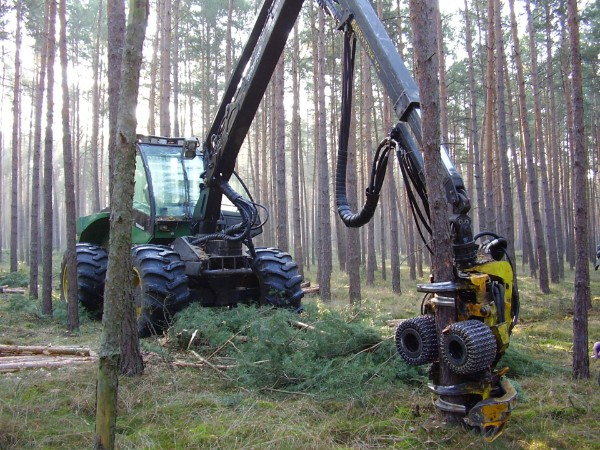
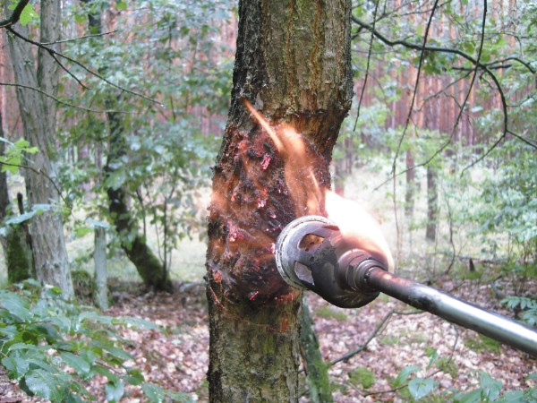
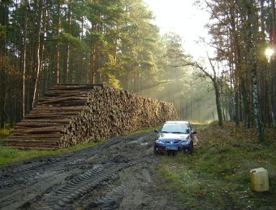

Holz & Forst aus dem
Jerichower Land
Brennholz, Schnittholz und Rundholz direkt vom Forstbetrieb bei Genthin. Für Gewerbe und Privatkunden.
Über uns
Die Scharteucker Forst GbR mbH ist ein Forstbetrieb nördlich von Genthin. Wir verkaufen Holz aus dem eigenen Wald: natürlich gewachsen, unbelastet und ohne Kahlschlag geerntet.
Mehr über den Scharteucker ForstUnsere Produkte
Pro Jahr rund 1.000 bis 1.500 Kubikmeter, nie mehr, als nachwächst.

Langholz
Kiefer bis 18 Meter, am Waldweg gepoltert.

Industrieholz
Abschnitte, IS, SAB/LAK und LAS.

Brennholz
Selbstwerbung oder ofenfertig.

Schnittholz
Balken, Bohlen und Bretter nach Maß.

GPS-Holz
Mit Nachweis, wo Ihr Baum stand.

Pfähle & Reisig
Zaunpfähle und Douglasienreisig.
Ein Wald, in dem mehr nachwächst, als wir ernten
Wir ernten nie mehr, als nachwächst. Nebenbei liefert der Wald das Trinkwasser für Genthin und Umgebung.
- 1.500 m³Holzzuwachs pro Jahr
- 70 %Kiefer im Bestand
- 1,9 Mio. lTrinkwasser am Tag
- 120Nistkästen
- 18 mLangholz
- 5Holzarten
- 0Kahlschläge
- 5 kmnördlich von Genthin
Wirtschaftlichkeit und Naturschutz sind vereinbar
Keine Kahlschläge, biologisches Sägekettenöl, Nistkästen und Mischwald statt reiner Kiefer: Davon profitieren Wald, Tiere und Betrieb.
Mehr zur Nachhaltigkeit


Holzernte
Durchforstung, Harvester, Rückezug und Hackschnitzel aus Waldrestholz.

Neuer Wald
Waldpflug, Pflanzung und Kiefern-Naturverjüngung in fünf Schritten.

Waldschutz
Traubenkirsche, Eichenprozessionsspinner und Sandrohr.

Übersicht
Alle Themen unserer Waldwirtschaft auf einen Blick.

Holz direkt aus dem Wald
Ob Kaminholz, Bohlen nach Maß oder Rundholz in Lkw-Mengen: Rufen Sie uns an, wir beraten Sie gern.
Kontakt aufnehmen